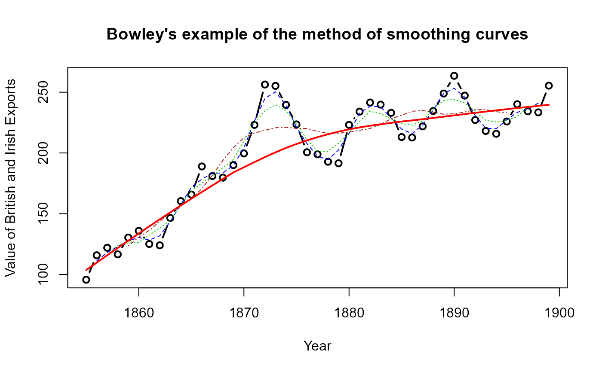

In one of the first statistical textbooks, Arthur Bowley (1901) used these data to illustrate an arithmetic and graphical analysis of time-series data using the total value of British and Irish exports from 1855-1899. He presented a line graph of the time-series data, supplemented by overlaid line graphs of 3-, 5- and 10-year moving averages. His goal was to show that while the initial series showed wide variability, moving averages made the series progressively smoother.
Format
A data frame with 45 observations on the following 2 variables.
YearYear, from 1855-1899
Valuetotal value of British and Irish exports (millions of Pounds)
Source
Bowley, A. L. (1901). Elements of Statistics. London: P. S. King and Son, p. 151-154.
Digitized from Bowley's graph.
Examples
data(Bowley)
# plot the data
with(Bowley,plot(Year, Value, type='b', lwd=2,
ylab="Value of British and Irish Exports",
main="Bowley's example of the method of smoothing curves"))
# find moving averages
# simpler version using stats::filter
running <- function(x, width = 5){
as.vector(stats::filter(x, rep(1 / width, width), sides = 2))
}
mav3 <- running(Bowley$Value, width=3)
mav5 <- running(Bowley$Value, width=5)
mav9 <- running(Bowley$Value, width=9)
lines(Bowley$Year, mav3, col='blue', lty=2)
lines(Bowley$Year, mav5, col='green3', lty=3)
lines(Bowley$Year, mav9, col='brown', lty=4)
# add lowess smooth
lines(lowess(Bowley), col='red', lwd=2)

# Initial version, using ggplot
library(ggplot2)
#> Warning: package 'ggplot2' was built under R version 4.5.2
ggplot(aes(x=Year, y=Value), data=Bowley) +
geom_point() +
geom_smooth(method="loess", formula=y~x)